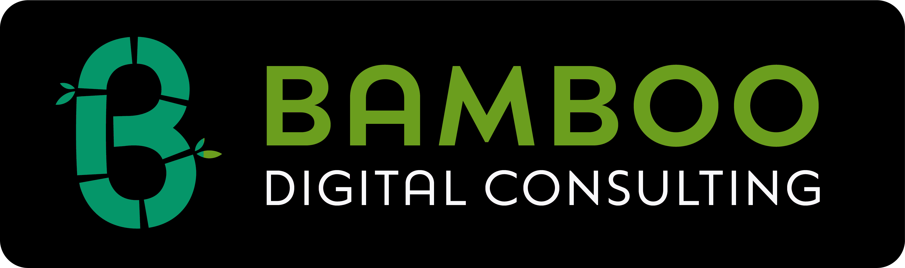

Free Assessment
20 questions. 5 minutes. A clear picture of where your governance stands across TEMPO's four engines.
Your Trust Profile
Adopt
Govern
Orchestrate
Adapt
Enter your email to unlock your full Trust Profile and download a PDF report.
Governance is the engine. Trust is the destination. Here's your map.